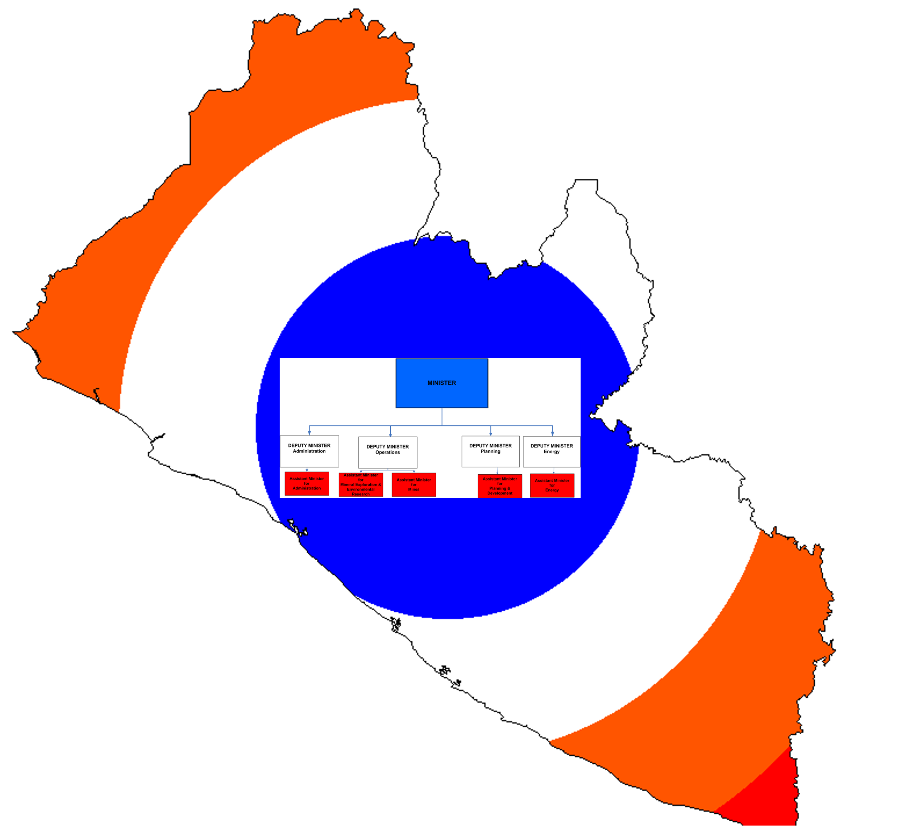

<map name="mmeorganigram">
<area shape="rect" coords="1091,990,1347,1125" href="https://mlmeliberia.wordpress.com/h-e-honourable-gesler-e-murray" alt="Minister" />
<area shape="rect" coords="772,1200,936,1289" href="#" alt="Deputy Minister Administration" />
<area shape="rect" coords="988,1204,1152,1292" href="#" alt="Deputy Minister Operations" />
<area shape="rect" coords="1274,1202,1433,1289" href="#" alt="Deputy Minister Planning" />
<area shape="rect" coords="1444,1204,1602,1289" href="#" alt="Deputy Minister Energy" />
<area shape="rect" coords="786,1301,908,1366" href="#" alt="Assistant Minister for Administration" />
<area shape="rect" coords="936,1305,1056,1369" href="#" alt="Assistant Minister for Mineral Exploration and Environmental Research" />
<area shape="rect" coords="1082,1306,1203,1369" href="#" alt="Assistant Minister for Mines" />
<area shape="rect" coords="1319,1310,1440,1372" href="#" alt="Assistant Minister for Planning and Development" />
<area shape="rect" coords="1463,1306,1583,1371" href="#" alt="Assistant Minister for Energy" />
</map>
